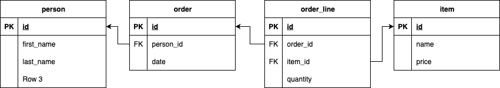

AMT
Manipulating and querying data
Bertil Chapuis, Dorian Gambin
## <i class="fas fa-tasks"></i> Overview of Today's Class - Manipulating data - Querying databases - Object relational impedance mismatch
Manipulating data
## <i class="fas fa-database"></i> Manipulating data Let's consider the following entity relationship diagram.  What would happen if we create the corresponding Jakarta Persistence entities based only on our intuitions of how the ORM supposedly works?
## <i class="fas fa-database"></i> Person entity ```java @Entity(name = "persons") public class Person { @Id @Column(name = "id", nullable = false) private Long id; @Column(name = "first_name", nullable = false) private String firstName; @Column(name = "last_name", nullable = false) private String lastName; @OneToMany private List<Order> orders; // ... } ```
## <i class="fas fa-database"></i> Order entity ```java @Entity(name = "orders") public class Order { @Id @Column(name = "id", nullable = false) private Long id; @OneToMany private List<OrderLine> orderLines; // ... } ```
## <i class="fas fa-database"></i> Order line entity ```java @Entity(name = "order_lines") public class OrderLine { @Id @Column(name = "id", nullable = false) private Long id; @ManyToOne private Item item; @Column(name = "quantity", nullable = false) private int quantity; // ... } ```
## <i class="fas fa-database"></i> Item entity ```java @Entity(name = "items") public class Item { @Id @Column(name = "id", nullable = false) private Long id; @Column(name = "price", nullable = false) private int price; // ... } ```
## <i class="fas fa-database"></i> Generated schema <img src="./images/generated-schema.png" alt="Generated schema" style="width: 80%;"> Notes: The schema generated by Hibernate's default behavior often does **not** match the original ER diagram. Relying on assumptions about how the ORM works can lead to unexpected join tables and relationships. This example highlights why it's important to explicitly define mappings and not depend on defaults. Always review the generated schema to ensure it reflects your intended data model.
## <i class="fas fa-database"></i> Why join tables are used in the generated schema? In summary the relationships in Jakarta Persistence have an owning side that controls the relation, the annotation `@OneToMany` alone (i.e without a reverse `@ManyToOne`) creates an unidirectional relationship. Since the owning side doesn't specify more information, the default mapping applies. In order to specify a relationship with foreign key in the non-owning side, more information must be given to Jakarta Persistence. **Jakarta Persistence 3.1, [2.10. Entity Relationships](https://jakarta.ee/specifications/persistence/3.1/jakarta-persistence-spec-3.1#a516):** <i class="fa-solid fa-quote-left"></i> The mapping of unidirectional one-to-many relationships by means of foreign key mappings. The JoinColumn annotation or corresponding XML element must be used to specify such non-default mappings. <i class="fa-solid fa-quote-right"></i> **Jakarta Persistence 3.1, [2.11.5.1. Unidirectional OneToMany Relationships](https://jakarta.ee/specifications/persistence/3.1/jakarta-persistence-spec-3.1#a764):** <i class="fa-solid fa-quote-left"></i> The following mapping defaults apply: * Entity A is mapped to a table named A. * Entity B is mapped to a table named B. * There is a join table that is named A_B (owner name first). This join table has two foreign key columns. One foreign key column refers to table A [...] The other foreign key column refers to table B [...] <i class="fa-solid fa-quote-right"></i>
## <i class="fas fa-database"></i> Always tell the ORM what to do! In the `Person` class: ```java @OneToMany @JoinColumn(name = "person_id", referencedColumnName = "id") private List<Order> orders; ``` In the `Order` class: ```java @OneToMany @JoinColumn(name = "order_id", referencedColumnName = "id") private List<OrderLine> orderLines; ``` In the `OrderLine` class: ```java @ManyToOne @JoinColumn(name = "item_id", referencedColumnName = "id") private Item item; ```
## <i class="fas fa-database"></i> Improved generated schema <img src="./images/generated-schema-improved.png" alt="Generated schema" style="width: 40%;">
## <i class="fas fa-database"></i> Entity Instance Life Cycle **Reference:** [Jakarta Persistence 3.1, 3.2. Entity Instance’s Life Cycle](https://jakarta.ee/specifications/persistence/3.1/jakarta-persistence-spec-3.1#a1929) Jakarta Persistence entities go through several states during their lifetime. **New (Transient):** The entity is created with `new` and is not yet associated with the persistence context or the database. ```java var p = new Person("John", "Doe"); // not managed, no id assigned ``` **Managed (Persistent):** The entity is associated with the persistence context. Changes to the entity are tracked and synchronized with the database. ```java // p becomes managed and will be saved to the database em.persist(p); // or when loaded from the database: var p = em.find(Person.class, 1L); // managed ``` **Detached:** The entity was previously managed, but is no longer associated with the persistence context. Changes to the entity are not tracked. Detachment can also happen after transaction commit, rollback, or clearing/closing the EntityManager. ```java var p = em.find(Person.class, 1L); em.detach(p); // p is now detached ``` **Removed:** The entity is marked for deletion. It remains managed until the transaction is committed, at which point it is deleted from the database. ```java var p = em.find(Person.class, 1L); em.remove(p); // p is marked for removal ``` Understanding these states is essential for correctly managing entity persistence and updates in Jakarta Persistence. Notes: Hibernate manages the entity lifecycle automatically within the persistence context. When an entity is persisted, found, updated, or removed, Hibernate tracks its state and synchronizes changes with the database at transaction boundaries or when explicitly flushed. Detached entities are no longer tracked until reattached. This automation simplifies persistence but requires understanding when entities are managed or detached to avoid unexpected behavior.
## <i class="fas fa-database"></i> Creating entities Use `persist()` to add new entities: ```java EntityManager em = ...; em.persist(new Person("John", "Doe")); em.persist(new Person("Jane", "Doe")); ``` This inserts new rows in the database: ```SQL INSERT INTO person (first_name, last_name) VALUES ('John', 'Doe'); INSERT INTO person (first_name, last_name) VALUES ('Jane', 'Doe'); ```
## <i class="fas fa-database"></i> Updating and removing entities Use `find()` to retrieve entities, then modify or remove them. ```java // Getting the entity manager EntityManager em = ...; // Finding a person Person person = em.find(Person.class, 1L); // Updating the person through its managed entity person.setFirstName("John"); person.setLastName("Smith"); // The entity being managed, // there is no need to call em.persist(person) or em.merge(person), // it will be synchronized to the database by the Jakarta Persistence implementation ``` In this example, the entity manager is used to find a person and remove it. ```java // Getting the entity manager EntityManager em = ...; // Finding a person Person person = em.find(Person.class, 1L); // Removal of the entity em.remove(person); // The entity being managed, // it will be synchronized to the database by the Jakarta Persistence implementation // before becoming removed from the persistent context ```
## <i class="fas fa-database"></i> Jakarta Persistence 3.1, [3.2.4. Synchronization to the Databases](https://jakarta.ee/specifications/persistence/3.1/jakarta-persistence-spec-3.1#a1955):** <i class="fa-solid fa-quote-left"></i>The state of persistent entities is synchronized to the database upon transaction commit. This synchronization involves writing to the database any updates to persistent entities and their relationships. [...] The persistence provider runtime is permitted to perform synchronization on the database at other times as well as when a transaction is active and the persistence context is joined to the transaction. The flush method can be used by the application to force synchronization. [...] <i class="fa-solid fa-quote-right"></i> <i class="fa-solid fa-circle-exclamation"></i> To better understand **when** and **what** happens during the synchronization: 1. activate the logging of SQL queries `quarkus.hibernate-orm.log.sql=true` 2. use the debugger with breakpoints and execute step-by-step.
## <i class="fas fa-database"></i> Efficient batch insert and update For large data sets, use batch operations to improve performance. Committing each row individually is slow and inefficient, as it involves multiple round-trips to the database. Batch inserts and updates group multiple operations into a single statement, reducing overhead and speeding up database writes.
## <i class="fas fa-database"></i> Batch Inserts with JDBC **Prepared statements** are SQL statements that are precompiled and can accept parameters. Compared to regular statements, they help prevent SQL injection, improve performance for repeated queries, and allow safe parameter substitution. Using JDBC, you can use the `addBatch()` method on a PreparedStatement to add multiple sets of parameters to a batch, and then execute them all at once with `executeBatch()`. ```java PreparedStatement statement = connection.prepareStatement("INSERT INTO person (first_name, last_name) VALUES (?, ?)"); statement.setString(1, "John"); statement.setString(2, "Doe"); statement.addBatch(); statement.setString(1, "Jane"); statement.setString(2, "Doe"); statement.addBatch(); statement.executeBatch(); ```
## <i class="fas fa-database"></i> Batch Inserts with Jakarta Persistence By default, Hibernate does not use JDBC batching capabilities. However it is possible to enable it globally or per session. Hibernate ORM User Guide 6.6, [13.1. JDBC batching](https://docs.jboss.org/hibernate/orm/6.6/userguide/html_single/Hibernate_User_Guide.html#batch-jdbcbatch) <i class="fa-solid fa-quote-left"></i> `hibernate.jdbc.batch_size`: Controls the maximum number of statements Hibernate will batch together before asking the driver to execute the batch. Zero or a negative number disables this feature.<i class="fa-solid fa-quote-right"></i> </p> Quarkus corresponding configuration: [ `quarkus.hibernate-orm.jdbc.statement-batch-size`](https://quarkus.io/guides/hibernate-orm#quarkus-hibernate-orm_quarkus-hibernate-orm-jdbc-statement-batch-size )
## <i class="fas fa-database"></i> Insertion pitfall to avoid When inserting a large number of entities, be careful not to fill the persistent context. This can lead to memory leaks and out of memory errors. ```java EntityManager entityManager = ...; for (int i = 0; i < 100_000; i++) { Person Person = new Person(String.format("Jon %d", i), String.format("Doe %d", i)); entityManager.persist(Person); } ``` In this example, the persistent context will grow indefinitely as new entities are persisted. Remember that the persistent context can be manually flushed through `EntityManager.flush()`, which triggers a database synchronization and `EntityManager.clear()` can be used to control the size of the persistent context.
## <i class="fas fa-database"></i> Lower level mechanisms When inserting millions of rows, some databases offer lower level mechanisms. For example, PostgreSQL offers the COPY command. ```SQL COPY person (first_name, last_name) FROM '/tmp/person.csv' DELIMITER ',' CSV HEADER; ``` This command is much faster than using JDBC inserts or Jakarta Persistence persists. Further optimizations include disabling indexes, constraints, triggers, logging, etc. at the database level.
Querying databases
## <i class="fas fa-database"></i> Querying databases Beyond create, read, update and delete operations (CRUD), we often need to perform complex queries on our data. There are several ways to query a database using JDBC and Jakarta Persistence: - SQL Native - Jakarta JPQL - Jakarta Named queries - Jakarta Criteria API - Jakarta Criteria with Jakarta Metamodel
## SQL Native SQL remains the most powerful way to query your database. Lots of databases now offer specific features that are not part of the standard (e.g. JSON, XML, ...) and can only be accessed through SQL. ```java var query = """ SELECT persons.first_name, persons.last_name, COUNT(orders.*) AS total FROM persons JOIN orders ON orders.person_id = persons.id GROUP BY persons.first_name, persons.last_name ORDER BY COUNT(orders.*) DESC """; List<Object[]> results = entityManager.createNativeQuery(query).getResultList(); results.forEach(row -> { var firstName = (String) row[0]; var lastName = (String) row[1]; var total = (Long) row[2]; System.out.println(firstName + " " + lastName + " " + total); }); ```
## Jakarta JPQL JPQL is a query language that is very similar to SQL Native. The main difference is that it is used to query entities and their relationships, rather than tables and columns. Here is the same query as before, but using JPQL. ```java TypedQuery<Object[]> query = entityManager.createQuery(""" SELECT persons.firstName, persons.lastName, COUNT(orders) AS total FROM persons persons JOIN persons.orders orders GROUP BY persons.firstName, persons.lastName ORDER BY COUNT(orders) DESC """, Object[].class); query.getResultList().forEach(row -> { var firstName = (String) row[0]; var lastName = (String) row[1]; var total = (Long) row[2]; System.out.println(firstName + " " + lastName + " " + total); }); ```
## Jakarta Named Queries Named queries are a way to define JPQL queries in the entity class. ```java @Entity(name = "persons") @NamedQueries({ @NamedQuery(name = "Person.findAll", query = "SELECT p FROM persons p"), @NamedQuery(name = "Person.findById", query = "SELECT p FROM persons p WHERE p.id = :id") }) public class Person { //... } ``` Here is how to use the named query defined above. ```java TypedQuery<Person> query = entityManager.createNamedQuery("Person.findAll", Person.class); List<Person> results = query.getResultList(); results.forEach(person -> { System.out.println(person.getFirstName() + " " + person.getLastName()); }); ```
## Jakarta Criteria API The Criteria API is a programmatic way to build queries programmatically. Here is the same query as before, but using the Criteria API. ```java var cb = entityManager.getCriteriaBuilder(); var query = cb.createQuery(Object[].class); var persons = query.from(Person.class); var orders = persons.join("orders"); query.multiselect(persons.get("firstName"), persons.get("lastName"), cb.count(orders)); query.groupBy(persons.get("firstName"), persons.get("lastName")); query.orderBy(cb.desc(cb.count(orders))); entityManager.createQuery(query).getResultList().forEach(row -> { var firstName = (String) row[0]; var lastName = (String) row[1]; var total = (Long) row[2]; System.out.println(firstName + " " + lastName + " " + total); }); ``` Some developers like having a programmatic way to build queries rather that using a string-based query language. However, the Criteria API is not type safe and not refactoring safe.
## Jakarta Criteria Metamodel The Criteria Metamodel is another way to build queries programmatically. Here is the same query as before, but using the Criteria Metamodel. ```java var cb = entityManager.getCriteriaBuilder(); var query = cb.createQuery(Object[].class); var persons = query.from(Person.class); var orders = persons.join(Person_.orders); query.multiselect(persons.get(Person_.firstName), persons.get(Person_.lastName), cb.count(orders)); query.groupBy(persons.get(Person_.firstName), persons.get(Person_.lastName)); query.orderBy(cb.desc(cb.count(orders))); entityManager.createQuery(query).getResultList().forEach(row -> { var firstName = (String) row[0]; var lastName = (String) row[1]; var total = (Long) row[2]; System.out.println(firstName + " " + lastName + " " + total); }); ``` Note that the Criteria Metamodel is generated at compile time from the entities. The main advantage of the Criteria Metamodel is that it is **type** and **refactoring safe**.
## <i class="fas fa-database"></i> Lazy vs. Eager Loading By default, Jakarta Persistence uses **lazy loading** for relationships: - Related entities are **not loaded** until you access them in your code. **Eager loading** loads related entities **immediately** when the main entity is loaded: - Use when you know you'll need the related data right away. Choose lazy loading for performance, and eager loading for convenience when necessary.
## <i class="fas fa-database"></i> Eager Loading Eager loading fetches related entities immediately, instead of on-demand (lazy loading). Enable eager loading with the `fetch` attribute: ```java @Entity(name = "orders") public class Order { @OneToMany(fetch = FetchType.EAGER) @JoinColumn(name = "order_id", referencedColumnName = "id") private List<OrderLine> orderLines; } ``` When you load an `Order`, all its `OrderLine` entities are loaded at once. **Caution:** - Eager loading can cause performance issues (N+1 queries, loading large object graphs). - Use eager loading only when you always need the related data.
## <i class="fas fa-database"></i> Jakarta Persistence Entity Graph EntityGraph lets you specify which attributes and relationships to fetch when loading an entity. It provides a flexible way to control fetching at runtime. ```java // Inside your repository or service class public Actor getActorWithMovies(EntityManager entityManager, Long actorId) { // Create an EntityGraph for the Actor entity EntityGraph<Actor> entityGraph = entityManager.createEntityGraph(Actor.class); // Use the Jakarta Persistence Metamodel to refer to the "movies" attribute and add it to the fetch plan entityGraph.addAttributeNodes(Actor_.movies); // Use the EntityGraph when fetching the Actor Map<String, Object> properties = new HashMap<>(); properties.put("javax.persistence.fetchgraph", entityGraph); return entityManager.find(Actor.class, actorId, properties); } ``` EntityGraphes can also be declared using annotations, through `@NamedEntityGraph`. Reference: [Jakarta 3.1, 3.7.4. Use of Entity Graphs in find and query operations](https://jakarta.ee/specifications/persistence/3.1/jakarta-persistence-spec-3.1#a2814)
## Logging slow queries Identifying slow queries in frameworks can be challenging. In Quarkus, enable SQL logging and set a threshold for slow queries: ``` quarkus.hibernate-orm.log.sql=true quarkus.hibernate-orm.log.sql.max-query-time=1s ``` Queries taking longer than 1 second will be logged. Use these logs to pinpoint and optimize problematic queries.
## Optimizing Long-Running Queries To optimize slow queries, analyze their execution plan using your database client (e.g., DataGrip, DBeaver). Use `EXPLAIN` to see how the database will execute your query (without running it): ```SQL EXPLAIN SELECT persons.first_name, persons.last_name, COUNT(orders.*) AS total FROM persons JOIN orders ON orders.person_id = persons.id GROUP BY persons.first_name, persons.last_name ORDER BY total DESC; ``` Use `EXPLAIN ANALYZE` to see the actual execution plan and timing: ```SQL EXPLAIN ANALYZE SELECT persons.first_name, persons.last_name, COUNT(orders.*) AS total FROM persons JOIN orders ON orders.person_id = persons.id GROUP BY persons.first_name, persons.last_name ORDER BY total DESC; ``` Review the plan for expensive operations (e.g., sequential scans, missing indexes) and optimize accordingly.
## Understanding a query plan In the query plan, you will see the following information: - The order in which the tables are accessed - The type of access (e.g. sequential scan, index scan, ...) - The estimated cost of the operation (e.g. number of rows to read) - The actual cost of the operation (e.g. number of rows to read) Some operations, like sequential scan, are very expensive and should be avoided. When joining tables, a sequential scan can result in the Cartesian product of the tables. ```SQL SELECT * FROM persons, orders WHERE persons.id = orders.person_id; ``` Notes: Here, if the person table has 1'000 rows and the orders table has 10'000 rows, the **Cartesian product** will have 10'000'000 rows. Without an index, the database will have to read all the rows of table1 and table2 to find the matching rows.
## Indexing the database When using SQL, you can add indexes to your tables. ```SQL CREATE INDEX person_first_name_index ON person (first_name); ``` When using Jakarta Persistence, you can also add indexes to your entities. ```java @Entity @Table(name = "person") @Index(name = "person_first_name_index", columnList = "first_name") public class Person { @Id @GeneratedValue(strategy = GenerationType.IDENTITY) private Long id; private String firstName; private String lastName; } ```
Object relational
impedance mismatch
## <i class="fas fa-database"></i> Object relational impedance mismatch The object relational impedance mismatch is the difference between the object model and the relational model. <img src="./images/object-relational-impedance-mismatch.png" alt="Object relational impedance mismatch" style="width: 50%;"> The object model has its roots in **graph theory**, while the relational model has its roots in **set theory** and **predicate logic**. Notes: Source of the image: https://martinfowler.com/bliki/OrmHate.html
## <i class="fas fa-database"></i> Object relational impedance mismatch Some object-oriented concepts do not exist in the relational model: - Inheritance - Polymorphism - Encapsulation - Identity - Behavior - etc. Some relational concepts do not exist in the object model: - Foreign keys - Joins - Indexes - Transactions - Aggregations - etc. These differences are hard to reconcile, and result in a so called impedance mismatch.
## <i class="fas fa-database"></i> Object relational mapping (ORM) **Object relational mapping (ORM)** is a technique that tries to address the object relational impedance mismatch. The goal of an ORM is to **hide the differences** between the **object model** and the **relational model** as much as possible from the developer. In practice, the ORM will **always leak** some relational concepts into the object model and vice versa. Does it really matter?
## <i class="fas fa-hand-paper"></i> Better understand the discussion Read the summary at the end of the article <a href="/references/031.01-Neward-The-Vietnam-of-Computer-Science-June-2006.pdf">The Vietnam of Computer Science</a> by Ted Neward. Discuss with your neighbor and try to answer the following questions: - What is the main argument of the article? - Do you agree with the author? - What is your opinion on the subject?